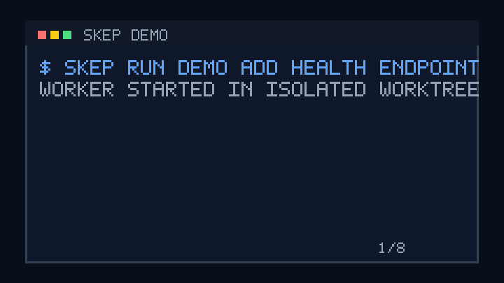

They can mutate repos directly
Agents can edit, commit, or push before you have reviewed the actual diff.
Sandboxed agent supervision
Sandbox it. Verify its work. Approve before it lands.

The risk
Agents can edit, commit, or push before you have reviewed the actual diff.
Package installs, shell commands, and network calls need a boundary.
A model saying "tests passed" is not the same as an independent check.
The control plane
macOS Seatbelt and Linux bubblewrap keep writes and network inside policy.
Skep re-runs checks on a clean copy before you see the result.
The agent produces a patch. You approve the branch when the evidence holds.
Events, commands, approvals, artifacts, and decisions are queryable later.
Flow
Quickstart
git clone https://github.com/Anmolnoor/skep.git
cd skep
uv sync --frozenuv run skep run /path/to/repo "fix the failing test" --execution-mode workspace
uv run skep status --personal
uv run skep review <task_id>
uv run skep review <task_id> --approve
Linux sandboxing requires bubblewrap. Claude Code users can run with
--worker-cmd "python -m skep.workers.claude_code".
Why it is different
| Capability | Raw coding agent | Agent Safehouse | Cursor sandbox | Skep |
|---|---|---|---|---|
| Sandbox boundary | Depends on the agent | Primary focus | Editor-owned | Supervisor-owned |
| Independent verification | Usually absent | Not the core loop | Editor-dependent | Required evidence |
| Patch approval | Optional | Outside the wrapper | Editor workflow | Default landing path |
| Audit trail | Fragmented logs | Sandbox-level logs | Editor history | Durable run store |
Workers
--worker-cmd "python -m skep.workers.claude_code"
SKEP_WORKER_CMD="your-skep-worker"
--worker-cmd "python -m skep.workers.codex"
Documentation
First run in 5 minutes.
The Queen/worker split, the contract, and the life of a task.
Seatbelt and bubblewrap; the network allowlist boundary.
Home, worker, policy, and model settings.
Every command.
Every doc, curated — concepts, reference, releasing, decisions.